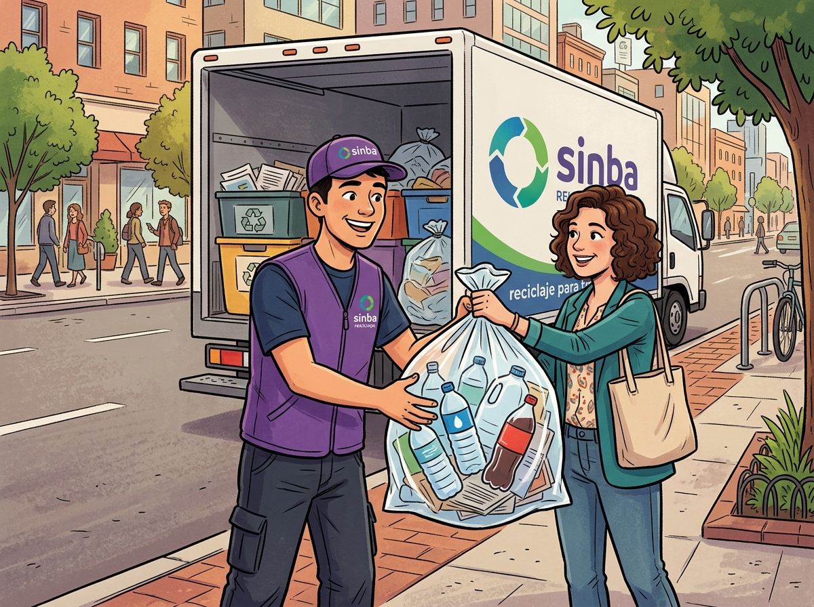

OPERACIÓN

Visualiza y despacha las rutas de recolección del día en tiempo real, con el estado de cada unidad en ruta.
Ejecución de rutas, checklists de recolección, comunicación con clientes e incidencias. Elige la herramienta que necesitas para tu turno.

Visualiza y despacha las rutas de recolección del día en tiempo real, con el estado de cada unidad en ruta.
Consulta los datos de contacto, direcciones y puntos de recojo de todos los clientes registrados en la operación.
Completa el checklist pre-operacional digital antes de iniciar cada ruta: unidad, EPP y equipos de recolección.
Estas herramientas viven en Google Apps Script y, por políticas de seguridad de Google, se abren en una pestaña nueva de tu cuenta Workspace de Sinba.